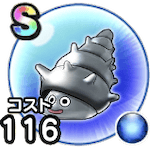

メタルつむり
11章1話〜12章10話こころ最大コスト+4スキルの斬撃ダメージ+7%斬撃・体技耐性+5%すべての状態異常耐性+5%悪い状態変化耐性+5% / 6.5点
くわしい特徴
【ランク特殊効果】 こころ最大コスト+4スキルの斬撃ダメージ+7%斬撃・体技耐性+5%すべての状態異常耐性+5%悪い状態変化耐性+5%

11章1話〜12章10話こころ最大コスト+4スキルの斬撃ダメージ+7%斬撃・体技耐性+5%すべての状態異常耐性+5%悪い状態変化耐性+5% / 6.5点
【ランク特殊効果】 こころ最大コスト+4スキルの斬撃ダメージ+7%斬撃・体技耐性+5%すべての状態異常耐性+5%悪い状態変化耐性+5%